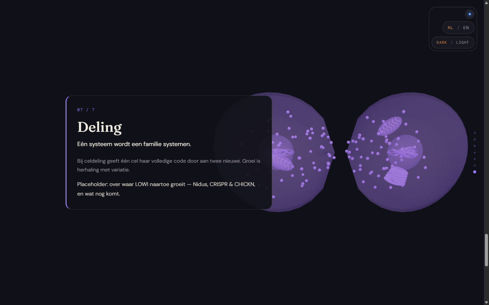

LOWI — Fase 3
Zeven hoofdstukken in beide thema’s. Klik op een beeld voor de oorspronkelijke screenshot. Desktop 1440 × 900; mobiel 390 × 844.
Volledig reviewrapport en meetmethode · Volledige instellingen, paletten en interpolatiecode
Artikel- en reduced-motion-weergaven
Productie-eindstaat

Twee gescheiden dochtercellen in de productiebuild